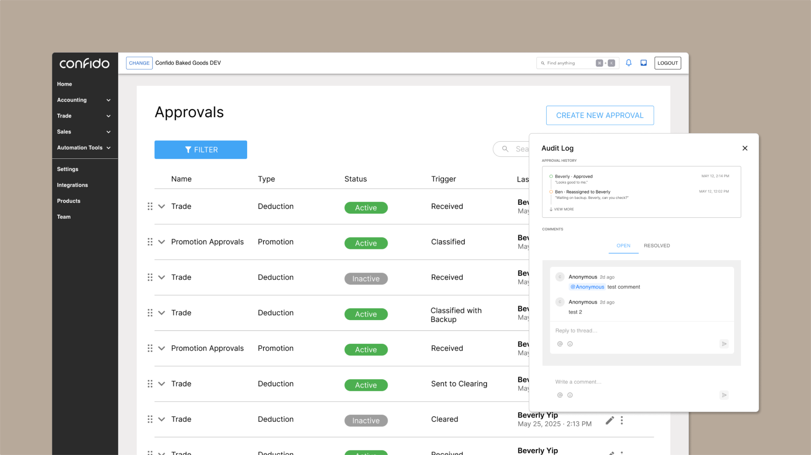
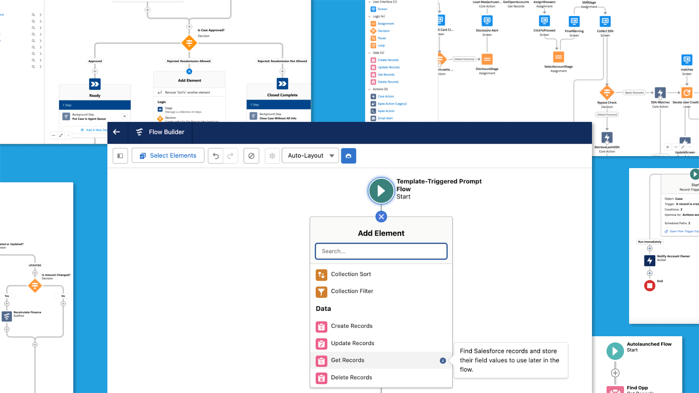
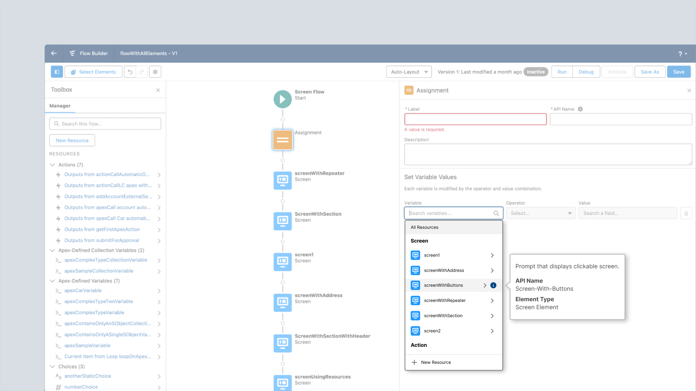

Rebuilding Confido's Approval Flow
UX Design Engineer
A case study on a refactored approval flow with smarter logic, clearer audit trails, and a redesigned UI for improved usability.
Currently pursuing a Master's in HCI at NYU ITP '26. Previously designed at
Confido (YC S21)
and coded at
Salesforce
 .
.

UX Design Engineer
A case study on a refactored approval flow with smarter logic, clearer audit trails, and a redesigned UI for improved usability.

Product Designer
A case study on streamlining access to the Whole Foods in-store checkout code within the Amazon app for a faster, frustration-free experience.

Software Engineer
A case study on improving accessibility and user productivity for sight-impaired users in the Salesforce Flow Builder.

Software Engineer
A case study on ensuring comprehensive keyboard navigation towards an improved resource selection experience in the Salesforce Flow Builder.